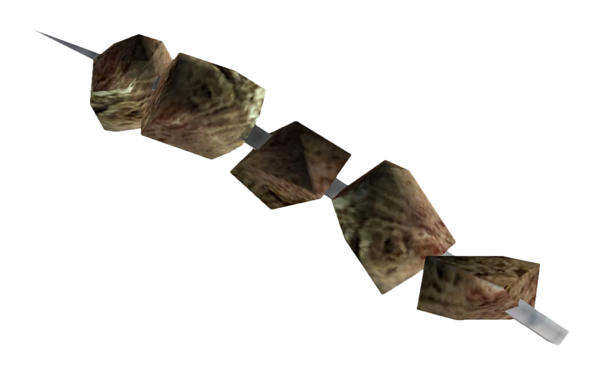

--- Crispy Squirrel Bits ---
What on God's Earth is it?
Crispy squirrel bits are squirrel kebabs that can be found in refrigerators, or purchased from merchants.
Another variety found in the Commonwealth, which are cut up squirrel bits.

Ingredients:
Method:
- Heat the squirrel bits over a direct heat source until charred.
- Once blackened, skewer the meat chunks to resemble a kebab.
- Optional: Wash down with lukewarm Nuka Cola!